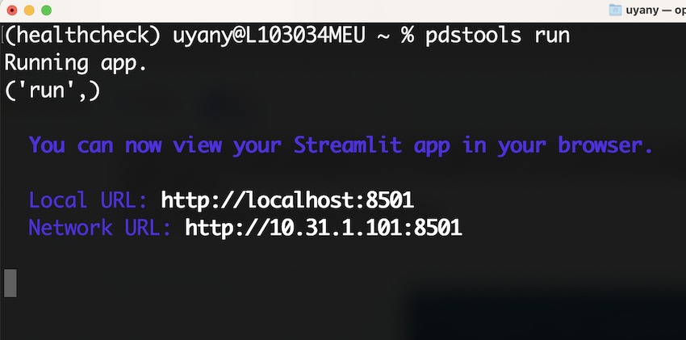
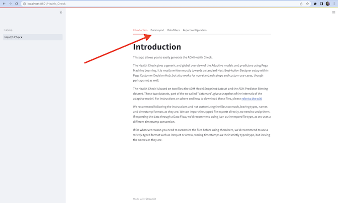

ADM Health Check#
Pega
2023-05-10
Pdstools version 3 brought over the Health Check from the R tools to Python. Along with this change, we made it easier to run by providing an easy to use webapp. The Health Check provides a global overview of Adaptive models and predictors using Pega Machine Learning.
Downloading the Required Libraries#
To get started, you need Python with version 3.8 or greater and pip installed in your system. You can check which python version you have by running this in your command line:
python --version

It’s also best practice to regularly update your version of pip. If you get any errors during installation, first try:
pip install --upgrade pip
Now, you can proceed to download pdstools and other libraries required to run Health Check app. Simply run:
pip install --upgrade pdstools[app]
For zsh on Mac use quotes:
pip install --upgrade pdstools'[app]'
This will install pdstools, along with all required optional dependencies we use in the webapp.
Once you’ve got pdstools and other necessary packages installed, run pip show to verify the install.

If your pdstools version is below 3.1, you can upgrade it with this command:
pip install --upgrade pdstools
Finally, download Quarto cli from quarto.org. It is an open-source publishing library for creating dynamic html content.
Running the App#
To launch the Health Check application, simply enter “pdstools run” in your system’s command line.
pdstools run

Upon executing this command, the app should open up in your system browser. If the app does not open up automatically, simply copy the Local URL from your terminal and paste it into your browser.
Using the App: A Step-by-Step Guide#
1. Introduction#
The browser opens up with the Home page, from the left hand side, simply click on Health Check Check to get started with the HealthCheck app.

Please read the introduction page to learn more about the correct usage of the app, then you can move to Data Import tab to upload your data.

2. Data import#
You can upload your ADMDatamart data in this tab.
For testing the app, you may use the provided sample data from CDH Sample. For instructions on how to export your own datamart data, please refer to this article
If you’re using Treatments, make sure to add that to the context keys in the Configure Advanced Options section by clicking on Extract Additional Keys. Additionally, if you are not using all the default context keys(Channel, Direction, Issue, and Group), feel free to remove the ones you won’t be using.
Next, you can select your import method from the dropdown menu under Data Import. You will see 4 options:
Direct file path: Simply paste the folder path where the ADM files are located. Ex. /User/Downloads/. pdstools should automatically find the relevant files in that directory. Note: there is no need to extract the zip files, we will also take care of that for you.
Direct file upload: Browse your local files with this option. If you don’t have access Predictor Binning files, you can upload only the Model Snapshot file and then click on the checkbox to confirm that you want to run only model-based Health Check. Note: Maximum file upload size is 2000 MB. You can increase it by launching the app with this command “pdstools run –server.maxUploadSize desired file size” Ex. :
pdstools run --server.maxUploadSize 5000
CDH Sample: You can generate a sample HealthCheck with this option. It is a convenient way to test out the Health Check using a CDH Sample dataset.
Download from S3: This feature is not implemented yet but soon, you will be able to run HealthCheck without downloading the files to your local system if they are located in S3.
3. Data filters#
After the data is imported into the app you can easily add custom filters to specify the Health Check to your needs. For just analyzing models in the Web channel, select “Channel” from dropdown, delete other channels (if any), move to next tab.

4. Report configuration#
In this tab you can configure some options for the outputs and then generate your Health Check document. The options are:
Customer name: Change the name of the Health Check file that will generated
Select output type: Change output format under this field
Change working directory: You can change folder name where the temporary files will be stored while running the code. Please choose a directory where Python has read and write access.
Check Boxes:
Remove temporary files: Chose whether you want to keep temporary files or not. Note: If you get an error while the Health Check is being generated, you can deselect this checkbox and share the log which should be created under the directory you named in Change working directory section
Include tables in document: Whether to include the overview tables embedded in the document itself or to separately recieve these in a tabbed Excel file. If you have a large datamart file, it may be worth unchecking this, as the final health check will be smaller and faster.
Finally, you can click on the Generate Health Check button. Once the process is complete, a Download Health Check button will appear. You can download Health Check by clicking on it.
Troubleshooting#
In case you run into any issues, please file an issue on GitHub to let us know, and we’ll get it fixed as soon as possible!
Contributing#
If you’d like to see more or different information in the Health Check - we’d appreciate any contributions, preferably in the form of a pull request. If you’re not comfortable in Python or want to discuss the value of your proposed solution, also feel free to open a feature request.